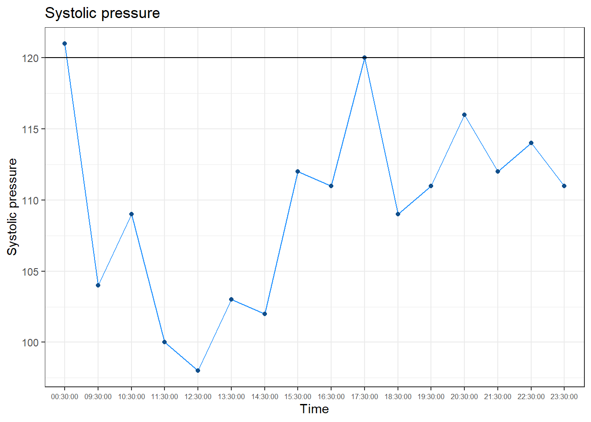
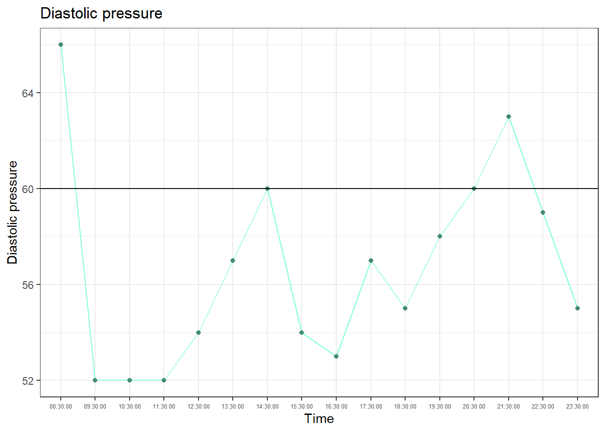
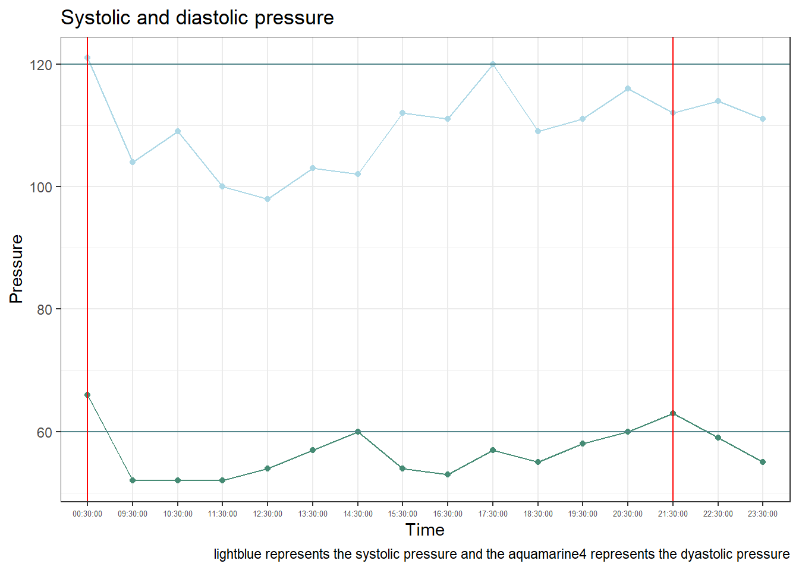
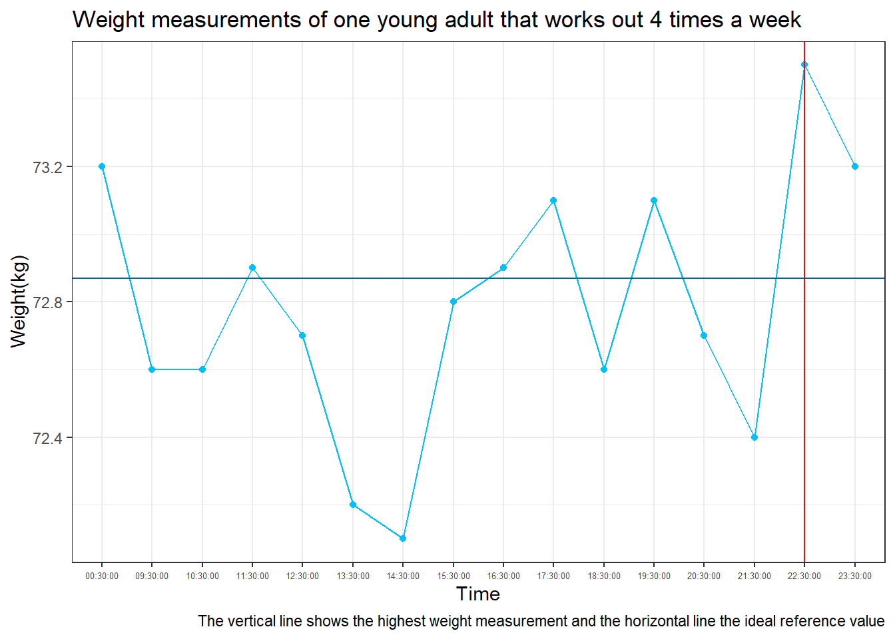

#Loading our dataset
library(readxl)
library(tidyverse)
#Selecting the Excel file that contains our data-----------------------------------
file.choose()[1] "D:\\OneDrive - UAM\\Escritorio\\Data analysis\\R documents\\Proyecto analisis estadistico mis parametros de salud\\Health_analysis\\Quarto_refort_definitive\\Quarto report.qmd"raw_data <- "D:\\OneDrive - UAM\\Escritorio\\Data analysis\\R documents\\Proyecto analisis estadistico mis parametros de salud\\analisis datos mios con R.xlsx"
first_data <- read_excel(raw_data)
first_data # A tibble: 16 × 5
momento_del_dia ps pd pulso peso
<dttm> <dbl> <dbl> <dbl> <dbl>
1 1899-12-31 09:30:00 104 52 52 72.6
2 1899-12-31 10:30:00 109 52 58 72.6
3 1899-12-31 11:30:00 100 52 50 72.9
4 1899-12-31 12:30:00 98 54 47 72.7
5 1899-12-31 13:30:00 103 57 44 72.2
6 1899-12-31 14:30:00 102 60 45 72.1
7 1899-12-31 15:30:00 112 54 44 72.8
8 1899-12-31 16:30:00 111 53 47 72.9
9 1899-12-31 17:30:00 120 57 49 73.1
10 1899-12-31 18:30:00 109 55 46 72.6
11 1899-12-31 19:30:00 111 58 46 73.1
12 1899-12-31 20:30:00 116 60 49 72.7
13 1899-12-31 21:30:00 112 63 44 72.4
14 1899-12-31 22:30:00 114 59 49 73.5
15 1899-12-31 23:30:00 111 55 49 73.2
16 1900-01-01 00:30:00 121 66 51 73.2# Removing a date from the variable momento_del_dia--------------------------------
second_data <- separate(first_data, momento_del_dia, into =c("dia", "hora"),sep=" ")
second_data# A tibble: 16 × 6
dia hora ps pd pulso peso
<chr> <chr> <dbl> <dbl> <dbl> <dbl>
1 1899-12-31 09:30:00 104 52 52 72.6
2 1899-12-31 10:30:00 109 52 58 72.6
3 1899-12-31 11:30:00 100 52 50 72.9
4 1899-12-31 12:30:00 98 54 47 72.7
5 1899-12-31 13:30:00 103 57 44 72.2
6 1899-12-31 14:30:00 102 60 45 72.1
7 1899-12-31 15:30:00 112 54 44 72.8
8 1899-12-31 16:30:00 111 53 47 72.9
9 1899-12-31 17:30:00 120 57 49 73.1
10 1899-12-31 18:30:00 109 55 46 72.6
11 1899-12-31 19:30:00 111 58 46 73.1
12 1899-12-31 20:30:00 116 60 49 72.7
13 1899-12-31 21:30:00 112 63 44 72.4
14 1899-12-31 22:30:00 114 59 49 73.5
15 1899-12-31 23:30:00 111 55 49 73.2
16 1900-01-01 00:30:00 121 66 51 73.2third_data <- second_data %>%
select(hora, ps, pd, pulso, peso)
third_data# A tibble: 16 × 5
hora ps pd pulso peso
<chr> <dbl> <dbl> <dbl> <dbl>
1 09:30:00 104 52 52 72.6
2 10:30:00 109 52 58 72.6
3 11:30:00 100 52 50 72.9
4 12:30:00 98 54 47 72.7
5 13:30:00 103 57 44 72.2
6 14:30:00 102 60 45 72.1
7 15:30:00 112 54 44 72.8
8 16:30:00 111 53 47 72.9
9 17:30:00 120 57 49 73.1
10 18:30:00 109 55 46 72.6
11 19:30:00 111 58 46 73.1
12 20:30:00 116 60 49 72.7
13 21:30:00 112 63 44 72.4
14 22:30:00 114 59 49 73.5
15 23:30:00 111 55 49 73.2
16 00:30:00 121 66 51 73.2# Plotting Systolic pressure-------------------------------------------------------
ps_graph <- third_data %>%
ggplot(aes(x= hora,
y=ps))
ps_graph+
geom_line(group= "ps",
color= "dodgerblue")+
geom_point(color="dodgerblue4")+
geom_hline(yintercept = 120)+
labs(title = "Systolic pressure",
x= "Time",
y= "Systolic pressure")+
theme_bw()+
theme(axis.text.x= element_text( size= "6"))
# Statistical inference of systolic pressure (ps) ---------------------------------
mean_ps <- mean(third_data$ps)
mean_ps[1] 109.5625standard_deviation_ps <- sd(third_data$ps)
standard_deviation_ps[1] 6.712861# The population value for sistolic pressure for a young adult is 120
population_ps_mean <- 120
# Since we have a small sample size, only 16 observations and we dont know the population standard deviation we are on a t-student distribution.
# First hypothesis-----------------------------------------------------------------
# H0; mean_ps=population_ps_mean
# H1; mean_ps is different than population_ps_mean
# 1. Calculating 95% Confidence interval (CI) -------------------------------------
#
# n= 16
# mean_ps= 109.5625
# standard_deviation_ps= 6.712861
# degrees of freedom = n-1 = 16-1=15
#since its a 95%CI we do:
alpha <- 0.05
half_alpha <- alpha/2
percentile <- 1-half_alpha
# Now lets look on the t-student distribution table for the value of n-1=16-1=15 degrees of freedom where 97.5% of the values are inferior to it:
t_student_ps <- 2.131
# The CI is:
lower_CI <- mean_ps-t_student_ps*(standard_deviation_ps/sqrt(16))
lower_CI[1] 105.9862upper_CI <- mean_ps+ t_student_ps*(standard_deviation_ps/sqrt(16))
upper_CI[1] 113.1388CI_ps <- c(lower_CI,upper_CI)
CI_ps[1] 105.9862 113.1388# Since the CI does not inclue the H0 value, we can reject H0 and accept H1 ,
# the systolic pressure of this young adult that works out 4 times a week is different than the reference value of a healthy young adult.
# 2. Method of the rejection area -------------------------------------------------
# we have to calculate the pivot value:
pivot <- (mean_ps-population_ps_mean)/(standard_deviation_ps/sqrt(16))
pivot[1] -6.219405# Delimiting rejection zone:
#Since we did a bilateral significance test, we will establish two regions , one for values much higher than 120 and one for values much lower than 120.
#This two regions must cover 5% of the values which is the significance we are considering, the error in case we are wrong when rejecting H0:
#since its bilateral we will have halph_alpha on each side of the graph, so we will reject values that are below the quartile region of 2.5 and above 97.5 ,
# we calculate the 97.5 percentile looking at the normal table and we get a value of 1.96 on the right and - 1.96 on the left. So values that are above 1.96 or below -1.96 will fall in the rejection region, allowing us to reject H0 and accept H1.
# Our pivot value is : -6.21 which falls within the rejection region, therefore we reject H0 and we accept H1.
# 3. Calculating the p-value for this test-----------------------------------------
# We are considering both sides of the distribution since H1 is its different than 120, which could mean either its smaller or higher than 120:
# First we have to calculate the pivot value:
pivot_ps <- (mean_ps-population_ps_mean)/(standard_deviation_ps/sqrt(16))
pivot_ps[1] -6.219405# Asumming Ho , the probability of finding lower values of our pivot is:
probability_pivot <- 1-0.9989
probability_pivot[1] 0.0011# Since we are considering both sides:
p_value_ps <- probability_pivot*2
p_value_ps[1] 0.0022#Second hypothesis-----------------------------------------------------------------
# Now we know that the value is different than the reference value, we want to see if its smaller or higher, looking at the graph the data suggests that it is smaller, so we will do the next hypothesis:
# H0: ps_mean_david= ps_mean_pop; 109.5625= 120
# H1: ps_mean_david < ps_mean_pop; 109.5625 < 120
# Here we are in a one tail hypothesis test, before we were looking at values above and below the mean, if H0 is false, it meant it was either higher or lower than the population mean.
# Now if H1 is true, it means that ps_mean_david is smaller than the population mean.
# 1. Calculating 95% Confidence interval (CI) -------------------------------------
# Looking at the CI calculated before, since it doesnt include H0 , we can already reject H0 and say that the systolic pressure of this young adult that exercises 4 times a week is lower than the reference systolic pressure.
# 2. Method of the rejection area -------------------------------------------------
# Now to see the rejection area, since we are in a one tail, the rejection area covers all values below percentile 5
# P5=P95 looking at the normal table, p95= 1.64 therefore p5=-1.64
# Since our pivot = -6.21, it falls within the rejection area , therefore we reject H0 and we accept H1.
# With the p-value method----------------------------------------------------------
# Here we dont multiply it by 2 because we are only looking at one side of the distribution:
probability_pivot <- 1-0.9989
probability_pivot[1] 0.0011# Now we will do the same for the diastolic pressure and the weigh-----------------
#Diastolic pressure comparison-----------------------------------------------------
#This time , to clean the data and remove the date column that was imported from Excel and that is wrong and not needed, we will use a different function than the one used when calculating the systolic pressure, the result is the same:
first_data# A tibble: 16 × 5
momento_del_dia ps pd pulso peso
<dttm> <dbl> <dbl> <dbl> <dbl>
1 1899-12-31 09:30:00 104 52 52 72.6
2 1899-12-31 10:30:00 109 52 58 72.6
3 1899-12-31 11:30:00 100 52 50 72.9
4 1899-12-31 12:30:00 98 54 47 72.7
5 1899-12-31 13:30:00 103 57 44 72.2
6 1899-12-31 14:30:00 102 60 45 72.1
7 1899-12-31 15:30:00 112 54 44 72.8
8 1899-12-31 16:30:00 111 53 47 72.9
9 1899-12-31 17:30:00 120 57 49 73.1
10 1899-12-31 18:30:00 109 55 46 72.6
11 1899-12-31 19:30:00 111 58 46 73.1
12 1899-12-31 20:30:00 116 60 49 72.7
13 1899-12-31 21:30:00 112 63 44 72.4
14 1899-12-31 22:30:00 114 59 49 73.5
15 1899-12-31 23:30:00 111 55 49 73.2
16 1900-01-01 00:30:00 121 66 51 73.2pd_analysis <- first_data %>%
separate_wider_delim(delim = " ",
cols = momento_del_dia,
names = c("dia", "hora")) %>%
select(hora,pd)
pd_analysis# A tibble: 16 × 2
hora pd
<chr> <dbl>
1 09:30:00 52
2 10:30:00 52
3 11:30:00 52
4 12:30:00 54
5 13:30:00 57
6 14:30:00 60
7 15:30:00 54
8 16:30:00 53
9 17:30:00 57
10 18:30:00 55
11 19:30:00 58
12 20:30:00 60
13 21:30:00 63
14 22:30:00 59
15 23:30:00 55
16 00:30:00 66pd_mean <- mean(pd_analysis$pd)
pd_mean[1] 56.6875pd_reference <- 80
pd_reference[1] 80standard_deviation_pd <- sd(pd_analysis$pd)
standard_deviation_pd[1] 4.126641# Plotting the diastolic pressure-------------------------------------------------
pd_graph <-
third_data %>%
ggplot(aes(x= hora,
y= pd))
pd_graph+
geom_line(group= "pd",
color= "aquamarine")+
geom_point(color="aquamarine4")+
geom_hline(yintercept = 60)+
labs(title = "Diastolic pressure",
x= "Time",
y= "Diastolic pressure")+
theme_bw()+
theme(axis.text.x= element_text( size= "5"))
# Statistical inference of diastolic pressure (pd) --------------------------------
#First hypothesis-----------------------------------------------------------------
# H0; pd_mean=pd_reference
# H1; pd_mean is different than pd_reference
# 1. Calculating the 95% CI -------------------------------------------------------
#Formula:
#pd_mean-t(n-1, 1-alpha/2)*(standar_deviation_pd/sqrt(16) and pd_mean+t(n-1, 1-alpha/2)*(standar_deviation_pd/sqrt(16)
t_15 <- 2.131
t_15[1] 2.131CI_pd_15 <- c(pd_mean-t_15*(standard_deviation_pd/sqrt(16)), pd_mean+t_15*(standard_deviation_pd/sqrt(16)))
CI_pd_15[1] 54.48903 58.88597# 2. Rejection area method --------------------------------------------------------
#calculating the pivot
pd_pivot <- (pd_mean-pd_reference)/(standard_deviation_pd/sqrt(16))
pd_pivot[1] -22.59707alpha[1] 0.05halph_alpha <- alpha/2
halph_alpha[1] 0.0251-halph_alpha[1] 0.975#Checking normal distribution table
p97.5 <- 1.96
p2.5 <- -1.96
#since our pd_pivot -22.59 , it falls in the rejection area, therefore we reject H0 that says that this young adult that worksout 4 times a week has the same diastolic pressure as a healthy young adult and we accept H1 that the diastolic pressure
#of this young adult that works out 4 times a week is different than the mean reference diastolic pressure of a healthy young adult.
# 3. Calculating the p-value-------------------------------------------------------
# Now we want to see the probability of getting a pivot of -22.59 if H0 is true:
# The probability of getting a value less than or equal to -22.59 is the same as
# the probability of getting a value equal or higher to 22.59 therefore:
# p(Z>22.59)= 1-P(Z<22.59):
1-0.998 [1] 0.002#since its a 2 sided we multiply that by 2:
pval_pd <- (1-0.998)*2
pval_pd [1] 0.004# Since its smaller than our alhpa (0.05) we reject H0 and accept H1 that its different.
#Second hypothesis-----------------------------------------------------------------
# Now, observing the data, it seems like the value is smaller than 60, we want to make the hypothesis that it is less that the average value for that population:
# H0: pd_mean= pd_reference
# H1: pd_mean< pd_reference
#
# 1. Calculating the 95% CI ----------------------------------------------------
# With the CI we have already demonstrated that it is below, since it doesnt include H0.
# 2. Rejection are method----------------------------------------------------------
# Since out pivot is -22.59 it falls within the rejection region we calculated before, when using the rejection method for the systolic pressure, therefore we still reject H0 and we accept H1, the diastolic pressure of this young adult that works out 4 times a week is less than the average pressure value of a healthy young adult.
# 3. Calculating the p-value-------------------------------------------------------
# p(Z<-22.59)=P(z> 22.59)= 1-p(Z<22.59)= pval_pd
# Since its a one tail, the pval is the same as pval_pd :
pval_one_side_pd <- pval_pd
pval_one_side_pd[1] 0.004# Since its < alpha, which is 0.05 , the probability of having a diastolic presure of 56.6875 if H0 is true is 0.4 % , since it is so rare, H0 has to be false, and H1 is true, the probability of being wrong if we accept H1 is 0.4% , since it is so low the chances of rejecting H0 and being wrong are extremely low, therefore we can say that H1 is true with very low probability of being wrong.
# Plotting systolic and diastolic pressure together--------------------------------
third_data %>%
ggplot(aes(x= hora))+
geom_point(aes(y= ps), color= "lightblue")+
geom_point(aes(y= pd), color= "aquamarine4")+
geom_line(aes(y= ps), group= "ps", color= "lightblue")+
geom_line(aes(y= pd), group= "pd", color= "aquamarine4")+
geom_hline(yintercept = 120, color= "cadetblue4")+
geom_hline(yintercept = 60, color= "cadetblue4")+
geom_vline(xintercept = c("00:30:00", "21:30:00"),
color= "red")+
labs(title= "Systolic and diastolic pressure",
x= "Time",
y= "Pressure",
caption = "lightblue represents the systolic pressure and the aquamarine4 represents the dyastolic pressure")+
theme_bw()+
theme(axis.text.x= element_text( size= "5"))
# Weight comparison----------------------------------------------------------------
#To finish the main analysis, we will see if the weight of this person that works out 4 times a week is the same as the reference ideal body weight of a person that has a height of 182 cm:
third_data# A tibble: 16 × 5
hora ps pd pulso peso
<chr> <dbl> <dbl> <dbl> <dbl>
1 09:30:00 104 52 52 72.6
2 10:30:00 109 52 58 72.6
3 11:30:00 100 52 50 72.9
4 12:30:00 98 54 47 72.7
5 13:30:00 103 57 44 72.2
6 14:30:00 102 60 45 72.1
7 15:30:00 112 54 44 72.8
8 16:30:00 111 53 47 72.9
9 17:30:00 120 57 49 73.1
10 18:30:00 109 55 46 72.6
11 19:30:00 111 58 46 73.1
12 20:30:00 116 60 49 72.7
13 21:30:00 112 63 44 72.4
14 22:30:00 114 59 49 73.5
15 23:30:00 111 55 49 73.2
16 00:30:00 121 66 51 73.2mean_weight <- mean(third_data$peso)
mean_weight[1] 72.7875reference_weight <- 72.87
reference_weight[1] 72.87# Plotting weight ----------------------------------------------------------------
third_data %>%
ggplot(aes(x= hora))+
geom_point(aes(y= peso),
color= "deepskyblue")+
geom_line(aes(y= peso),group= "peso", color= "deepskyblue1")+
geom_hline( yintercept= 72.87,
color= "deepskyblue4")+
geom_vline(xintercept="22:30:00",
color= "red")+
labs( title = "Weight measurements of one young adult that works out 4 times a week",
caption = "The vertical line shows the highest weight measurement and the horizontal line the ideal reference value",
x= "Time",
y= "Weight(kg)")+
theme_bw()+
theme(axis.text.x= element_text( size= "5"))
# Statistical inference of weight -------------------------------------------------
#1. calculating the 95% CI, alpha= 0.05--------------------------------------------
#we dont have the population sd , therefore we are on a t-student
sd_weight <- sd(third_data$peso)
sd_weight[1] 0.3792537t_value_15_0.975 <- 2.131
error_weight <- 2.131*(sd_weight/sqrt(16))
CI_weight <- c(mean_weight-error_weight, mean_weight+error_weight)
CI_weight[1] 72.58545 72.98955# Since the confidence interval includes the reference value, with the information we have we cannot reject H0.
#2. Rejection area method ---------------------------------------------------------
#H0: mean_weight= Reference_weight
#H1: mean_weight is different than Reference_weight
#alpha= 0.05
#calculating the pivot:
pivot_weight <- (mean_weight-reference_weight)/(sd_weight/sqrt(16))
pivot_weight[1] -0.87013#the t-student value is (tn-1,1-alpha/2)= t15,1-0.05/2)=t15, 0.975= ± 2.131
#since our pivot or t = -0.87013, it does not fall within the rejection area, therefore we fail to reject H0, there is not enough evidence that shows a difference between the weight of a person that is 182 cm and works out 4 times a week and the reference ideal value of a person of that height.
#3. calculating the p-value--------------------------------------------------------
# on a normal curve, the probability of getting a value that is equal or less than -0.87 = the probability of getting a value higher than 0.87 and the probability of getting a value higher than 0.87 = 1-probability of getting a value smaller than 0.87 therefore:
#the probability of getting a value less than 0.87= 0.8078:
one_minus_probability_higher_than_0.87 <- 1-0.8078
one_minus_probability_higher_than_0.87[1] 0.1922# 0.1922= p(Z< -0.87)= p(Z>0.87)
#since we are in a two tail:
p_value_weight <- 2*one_minus_probability_higher_than_0.87
p_value_weight[1] 0.3844# Since the p-value is higher than alpha , we fail to reject H0, again there is not enough evidence that shows a difference between the weight of a person that is 182 cm and works out 4 times a week and the reference ideal value of a person of that height.